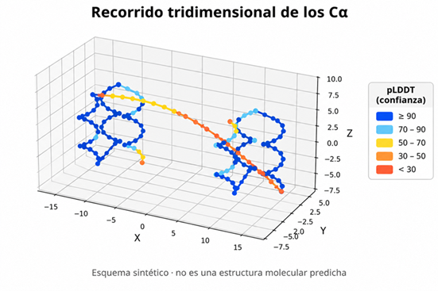
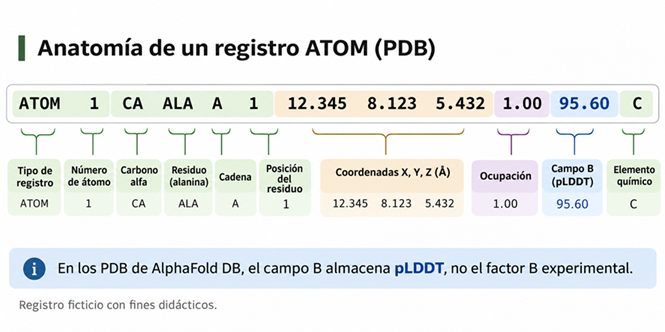
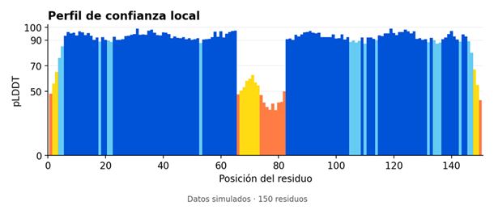
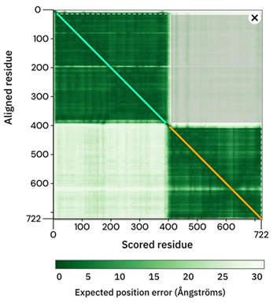

AlphaFold: de la secuencia a la estructura y la confianza de una predicción
Introducción conceptual a la práctica de Bioinformática · Grado en Ciencia e Ingeniería de Datos
Ir a la práctica · Recursos técnicos
Cuando hablamos de inteligencia artificial aplicada a la biología, AlphaFold es un ejemplo especialmente interesante. No solo nos permite estudiar cómo se predice una estructura molecular, sino también cómo se representa la incertidumbre de esa predicción. En esta sesión vamos a comentar algunos conceptos que les permitirán abordar la práctica. No es necesario que conozcan de antemano todos los detalles de las herramientas: parte del trabajo consiste precisamente en descubrirlos.
1. De la secuencia a la estructura de una proteína
Una proteína está formada por una o varias cadenas de aminoácidos. Cuando un aminoácido forma parte de una cadena, hablamos de un residuo. La secuencia indica el orden de estos residuos, pero no describe directamente la posición que ocupan en el espacio.
Las interacciones entre residuos y con su entorno favorecen determinadas conformaciones. Algunas regiones forman hélices alfa o láminas beta (estructura secundaria); la disposición tridimensional de una cadena constituye su estructura terciaria. Varias cadenas pueden asociarse formando una estructura cuaternaria. No todas las proteínas adoptan una única conformación rígida.
¿Por qué nos interesa conocer la estructura? Porque la disposición espacial de los residuos condiciona, entre otras cosas, las interacciones con otras moléculas y la función de la proteína. Sin embargo, conocer una estructura no equivale a conocer completamente su función.
Secuencia de residuos → organización espacial → posibilidades de interacción y función
Figura 1. Relación conceptual entre secuencia, estructura y función. La función también depende del entorno y de otras moléculas.
2. ¿Qué es AlphaFold?
AlphaFold es un sistema de aprendizaje profundo desarrollado por DeepMind para la predicción de estructuras biomoleculares. AlphaFold2, que es la referencia conceptual de esta práctica, utiliza la secuencia de aminoácidos y, cuando están disponibles, información evolutiva de alineamientos múltiples y plantillas estructurales. Aprende relaciones entre residuos y produce una representación tridimensional. No simula necesariamente el proceso físico de plegamiento a lo largo del tiempo.
Para ustedes, como estudiantes de Ciencia e Ingeniería de Datos, resulta interesante distinguir el modelo de predicción de los datos que este genera. AlphaFold DB es una base de datos que permite consultar modelos ya calculados. En la práctica no vamos a entrenar una red neuronal ni a ejecutar nuevas predicciones: vamos a analizar sus resultados publicados.
| Representación | Organización de los datos | Información |
|---|---|---|
| Secuencia | N residuos ordenados | Composición de la cadena |
| Coordenadas | Una terna X, Y, Z por átomo | Geometría tridimensional predicha |
| pLDDT | Vector de N valores | Confianza local por residuo |
| PAE | Matriz N × N | Error posicional relativo predicho |
N representa el número de residuos de una cadena en un modelo monomérico. Fíjense en que las tres últimas representaciones describen aspectos distintos del resultado y no son intercambiables.
💡 Metáfora
Tenemos dos piezas de un puzle tridimensional:
Pueden consultar AlphaFold DB y el artículo de AlphaFold2 para ampliar esta información.

Imagen. Representación esquemática de las coordenadas Cα de una cadena de 150 residuos. Elaboración propia, con coordenadas sintéticas; no corresponde a una predicción real de AlphaFold.
3. ¿Cómo representamos una estructura proteica en un archivo?
Un modelo estructural contiene coordenadas de átomos, no simplemente una imagen de una proteína. El formato PDB organiza estos datos en registros que identifican, entre otros elementos, el átomo, el residuo al que pertenece, la cadena y sus coordenadas en ångströms (Å). Un ångström equivale a 0,1 nanómetros.
El carbono alfa (Cα) es un átomo del esqueleto de cada residuo de una proteína. En un modelo completo, sus coordenadas permiten representar el recorrido de la cadena sin tener que trabajar con todos los átomos. En los modelos de AlphaFold DB, el campo que tradicionalmente se reserva al factor B contiene el pLDDT del residuo. Por tanto, no debemos interpretar ese campo como un factor B experimental.

Imagen. Ejemplo ficticio de un registro PDB. Fíjense en las coordenadas y en el campo B, que AlphaFold DB utiliza para almacenar pLDDT.
Si recuperamos un valor por cada átomo, los residuos con más átomos aparecerán más veces en nuestro conjunto de datos. ¿Qué consecuencias tendría esto al calcular una media de confianza? Trabajar con el Cα permite obtener un representante por residuo y evitar esa ponderación involuntaria.
Recuerden también que una posición de secuencia no es necesariamente equivalente a la misma posición numérica de otra proteína. Para establecer correspondencias biológicas necesitamos información adicional, como un alineamiento.
4. pLDDT: ¿qué confianza merece una región de la estructura?
El predicted Local Distance Difference Test (pLDDT) es una estimación, expresada entre 0 y 100, de la confianza del modelo en la geometría local alrededor de cada residuo. Un valor alto indica que el modelo espera que esa geometría sea más precisa. No significa que el residuo tenga una probabilidad equivalente de ser correcto ni que la proteína sea funcional.
En el visor de AlphaFold DB, los colores permiten localizar regiones con diferente confianza. En la práctica utilizaremos estos intervalos disjuntos:
| pLDDT | Interpretación | Color habitual del visor |
|---|---|---|
| 90–100 | Muy alta | Azul oscuro |
| 70–<90 | Alta | Azul claro |
| 50–<70 | Baja | Amarillo |
| 0–<50 | Muy baja | Naranja |

Imagen. Perfil pLDDT simulado para 150 residuos. Los colores reproducen las bandas de confianza utilizadas en el visor de AlphaFold DB. Elaboración propia.
Imaginen dos perfiles ficticios: uno con valores moderadamente altos en toda la secuencia y otro con regiones de confianza muy alta junto a una región de confianza baja. Ambos podrían tener una media semejante. ¿Sería suficiente esa media para describir lo que sucede en cada modelo?
La distribución de los valores, su posición en la secuencia y la continuidad de las regiones son aspectos que conviene considerar. Un tramo de residuos consecutivos contiene información que se pierde cuando resumimos todo el vector en una única cifra.
5. PAE: ¿qué sabemos de la posición relativa de dos regiones?
El pLDDT describe la confianza local, pero una proteína puede contener regiones bien predichas cuya disposición relativa sea incierta. Para estudiar ese aspecto utilizamos el Predicted Aligned Error (PAE).
El PAE estima el error posicional esperado, en Å, de un residuo cuando se alinean la estructura predicha y la real tomando otro residuo como referencia. Para N residuos tenemos N × N valores. Es importante consultar la convención de los ejes del archivo y del visor: el residuo evaluado y el utilizado como referencia desempeñan papeles diferentes.
Imaginen dos piezas rígidas conectadas por una unión flexible. Podemos conocer bastante bien la forma de cada pieza y, sin embargo, desconocer cómo están orientadas entre sí. Esta es una analogía de por qué necesitamos información adicional a la confianza local.
| Región de la matriz | A (referencia) | B (referencia) |
|---|---|---|
| A (evaluada) | Error bajo | Error alto |
| B (evaluada) | Error alto | Error bajo |
Figura 2. Esquema conceptual de cuatro bloques de una matriz PAE. No corresponde a ninguna proteína real y no establece umbrales universales.
Los bloques internos describen la confianza relativa dentro de cada región; los bloques cruzados aportan información sobre su disposición mutua. No tienen por qué contener los mismos valores en ambas direcciones: cambiar la referencia de alineamiento puede cambiar el error esperado. Por eso el PAE no tiene por qué ser simétrico.

Imagen. Representación matricial del error posicional relativo predicho (PAE). Las regiones de color verde oscuro indican un menor error esperado, mientras que las regiones de color verde claro reflejan una mayor incertidumbre. Fuente: AlphaFold Protein Structure Database.
Pueden contrastar estas representaciones con un ejemplo real de AlphaFold DB: esfingomielinasa (P9WKQ0) y con la figura 18 de la guía oficial de EMBL-EBI sobre PAE.
Tampoco es una matriz de distancias entre residuos. Una distancia física describe separación espacial; el PAE describe incertidumbre posicional. Valores bajos indican mayor confianza relativa, pero no existe una clasificación universal en cuatro bandas equivalente a la de pLDDT.
Cuando interpreten un mapa de calor, fíjense en la escala en Å, los ejes y los patrones de bloques. Un bloque observado no demuestra por sí solo la existencia de un dominio biológico.
6. Dominios, flexibilidad y desorden
Un dominio es una región de una proteína con cierta autonomía estructural y, en muchos casos, funcional. Dos dominios pueden estar conectados por una región flexible. La flexibilidad implica que una región puede adoptar distintas conformaciones; el desorden intrínseco describe regiones que no presentan una estructura tridimensional estable y única en determinadas condiciones biológicas.
Estos conceptos están relacionados, pero no son equivalentes. Un pLDDT bajo puede sugerir desorden o flexibilidad, aunque también puede reflejar limitaciones de la predicción. Del mismo modo, una región con confianza local alta puede tener una posición relativa incierta respecto a otra región.
Para apoyar una interpretación biológica debemos consultar anotaciones y otras evidencias, por ejemplo en UniProt. No confundan una hipótesis derivada de un patrón numérico con una propiedad demostrada experimentalmente.
7. Predicción, confianza y validación
En aprendizaje automático distinguimos entre la salida de un modelo, su estimación de confianza y el error que observamos cuando podemos comparar la predicción con una referencia. En AlphaFold ocurre algo semejante: las coordenadas son la predicción, mientras que pLDDT y PAE son estimaciones producidas por el propio sistema.
Para evaluar empíricamente una estructura podemos recurrir, cuando exista una referencia apropiada, a estructuras experimentales de RCSB PDB. Incluso entonces hay que considerar si las secuencias, las condiciones experimentales y el estado de asociación de las cadenas son comparables. Una referencia de comparación entre modelos predichos no equivale a una referencia experimental.
Antes de comenzar la práctica, plantéense esta cuestión: si un sistema de IA nos proporciona una predicción junto con una estimación de confianza elevada, ¿qué evidencia independiente necesitaríamos para comprobar que esa confianza está justificada?